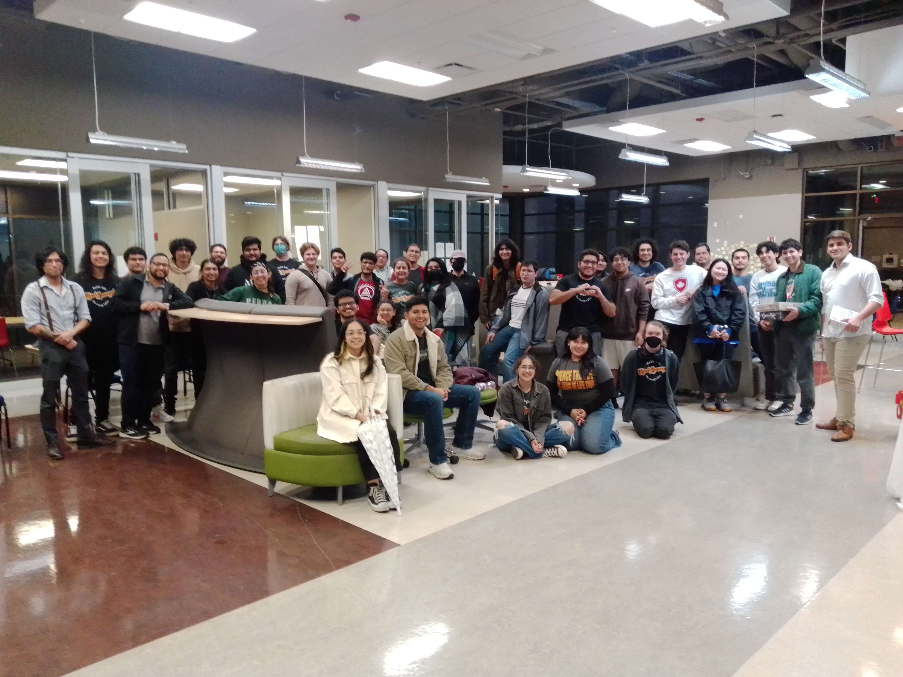

Project: AI Tutoring System
Technologies: Python, GPT-4, Jupyter Notebook
Github Repo:
I spearheaded a collaborative effort that led a diverse team to clinch the top spot in the AI Healthcare category at Hack Research 2023, a prestigious 24-hour research hackathon boasting over 100 participants and 22 innovative projects. This success underscored not only my adeptness in leadership and project management but also our collective commitment to innovation and excellence.
Our project embarked on a journey of discovery, utilizing advanced web scraping techniques to meticulously extract information from medical textbooks, thereby ensuring the accuracy and reliability of the data underpinning our AI solutions. Furthermore, our collaboration extended beyond the confines of our team as we actively engaged with medical students to garner insights and feedback, fostering a holistic approach to problem-solving.
At the heart of our endeavor lay cutting-edge AI methodologies. Leveraging the formidable capabilities of GPT-4, alongside techniques such as embeddings, vector search, retrieval augmented generation, and prompt engineering, we developed an AI Tutoring System poised to revolutionize healthcare education. Looking forward, we are committed to further refining and enhancing our system through ongoing improvements and iterations, guided by our collaborative spirit and dedication to making a meaningful impact in the field of healthcare education.
HACK RESEARCH 2023
